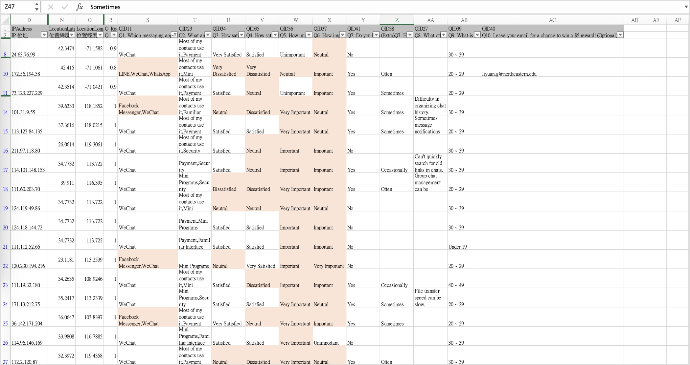

Brand Overview
WeChat is an instant messaging app developed by Chinese tech giant Tencent. Since its launch in 2011, it has gradually evolved into an all-in-one platform that integrates messaging, social networking, mini programs, and digital payments. In an increasingly competitive market of messaging applications, understanding user needs and pain points is essential for maintaining user engagement. Although WeChat remains a market leader, user expectations regarding usability and interface design continue to rise. Therefore, this study specifically focuses on the chatroom functionality within WeChat, aiming to gain insights into how users perceive and interact with its messaging interface, identify existing pain points, and explore potential improvements based on direct user feedback to enhance the overall chat experience.
WeChat is an instant messaging app developed by Chinese tech giant Tencent. WeChat has approximately 1.38 billion monthly active users, making it the most dominant instant messaging platform in China.

Since its launch in 2011
Over time, it has evolved into a comprehensive platform that seamlessly integrates messaging, social networking, mini programs, and digital payment services.
Pain Points
This study centers on the following key user-related issues.
How can we make the line break interaction more intuitive for users?
Is the experience of browsing multiple photos intuitive and smooth?
Do users consider a read receipt feature necessary?
What are some ways to improve the effectiveness of pinning important messages?
Are users experiencing difficulties or frustrations with message synchroni- zation between mobile and desktop devices?
Goals
This study centers on the following key user-related issues.

This study aims to understand the pain points and chall- enges users face when using WeChat chat rooms.
Investigate the features users desire to be added to the platform.
Offer specific, feasible design proposals aimed at enhancing the overall user experience.
Research Methods
- Competitive analysis: Analyze the functionalities and user experiences of WeChat in comparison with LINE and WhatsApp, aiming to uncover differences and potential opportunities for enhancement.
- Survey: A total of 74 questionnaires were collected, with 57 deemed valid and 44 responses directly related to the research objectives. The study mainly focuses on users’ satisfaction and demands concerning chat room functionalities.
- User Interviews: We conducted interviews with four users, including participants from China and Taiwan, to gain an in-depth understanding of their real-life usage contexts and perceptions.
Competitive Analysis

Survey
- Objective of the Survey: To understand users’ satisfaction levels and latent needs related to the functionalities of WeChat chat rooms.
- Survey Refinement Process: The questionnaire was revised through three rounds of refinement to eliminate ambiguous wording and double-barreled questions, and to strengthen alignment with the research questions.
- Survey Methodology Design: The questionnaire was
administered through Qualtrics and consisted of 10 questions in total.
Question types included multiple-choice, Likert scale questions (1–5 satisfaction
levels), and open-ended questions. Logic branching was incorporated to enhance the
accuracy of the collected data.
- Participant Information: The survey was distributed via social media platforms and university-related communities. A total of 74 responses were collected. Among them, 44 participants identified as WeChat users and were included in the main analysis. In terms of age distribution, 86% of respondents were between 20 and 39 years old, representing the core user demographic. 


Survey Ruselts
Line Break: Not Intuitive Enough
Users must long-press the screen to insert a line break.This interaction is not discoverable for new users and causes disruption in message flow. 70% of users (Satisfied + Very Satisfied) gave positive scores to the current line break function. Although the majority of users reported satisfaction, 30% of respondents expressed the opposite view, indicating that there is still room for improvement in the interface design and user flow—particularly for novice users who are unfamiliar with the interaction logic.
Viewing Multiple Images: Disjointed Experience
When sending multiple images, WeChat displays them one-by-one. Makes chat history harder to read and manage. 59% of users (Satisfied + Very Satisfied) gave positive scores to the current line break function, while over 41% were neutral or dissatisfied. Unlike WeChat, LINE presents shared images in a gallery format, providing a more intuitive browsing experience.
Lack of Read Receipt Feature
Users cannot know if the recipient has read their messages. Leads to uncertainty, especially in group or urgent chats. 86% of users rated a read receipt feature as “Important” or “Very Important.” This shows a clear gap between user expectations and current app features.
Message Pinning: Underutilized Potential
Pinning is possible, but many users are not aware of this function. Important messages get buried in active group chats. Regarding message pinning, 55% of participants considered it very important or important, indicating that this is a new feature worth paying attention to and considering.
Cross-Device Sync: A Repeated Friction Point
Messages between desktop and mobile versions are not fully synchronized Users report having to check phones to see complete histories. 59% of desktop users said they sometimes encounter sync issues; another 28% said they often do. Several users stated they had to rely on their phones to access the complete message history. This persistent problem negatively affects users who frequently switch devices—especially professionals.
User Interview
Meng
Chinese
34 years old
10+ yrs experience
Guo
Chinese
23 years old
10+ yrs experience
Morgen
Taiwanese
30 years old
5 yrs experience
Claire
Taiwanese
29 years old
3 yrs experience
Line Break is Unintuitive
Though 70% rated it positively, interview feedback revealed confusion around the hidden long-press interaction.
Root cause analysis showed a mental model mismatch: users expect Enter to create line breaks based on their experience with other messaging apps and computer typing, but WeChat uses it to send messages. Users have "gotten used to" this design, but it still causes accidental sends and cognitive friction, even among users who reported satisfaction in the survey. This finding highlights the importance of combining quantitative and qualitative research methods.
Multi-image View is Disorganized
2 out of 4 participants explicitly mentioned Images are displayed one-by-one in the chat history, which participants found “hard to browse” or “too long to view.”
Mixed Opinions on Read Receipt
2 participants said they don’t need it 2 others (especially Claire) wish this feature existed, referencing other apps like LINE or WhatsApp.
Cross-Device Syncing Issues
Only 1 participant encountered regular syncing issues Others had no strong opinion, but survey data shows broader concern.
Other Insights
Voice messages can’t be fast-forwarded → inconvenient. Moments UI is unintuitive: long-pressing camera for text-only post is hard to discover. Sticker quality was criticized as “ugly” and lacking variety.
Findings
Line break interaction is unintuitive.
Though 70% rated it positively, interview feedback revealed confusion around the hidden long-press interaction.
Multi-image display lacks grouping.
41% of users felt neutral or dissatisfied. Interviewees said browsing was time-consuming.
High demand for read receipts.
86% consider it important or very important. One interviewee expressed desire to match features from other apps.
Message pinning underutilized due to low visibility.
Nearly half of the participants considered it very important, indicating that this is a feature that should be added.
Messages are not synced across devices.
Every participant had encountered this problem.
Recommendations
Add a line break button in virtual keyboard
Currently, users must long-press to insert a line break, which several interviewees described as unintuitive.It is recommended to add a clearly visible line break button—either above the virtual keyboard or next to the input field—to reduce the learning curve and improve typing efficiency.
This is especially helpful for new users, as it reduces the likelihood of
accidentally sending messages.
Many users found it difficult to view multiple images displayed as
Allowing multiple images to be displayed as a grouped set—either through swipe navigation or a grid view—can enhance visual organization and make it easier for users to review past content efficiently.
Enhance the user experience of viewing messages.
Add optional “Read Receipt” toggle
Survey shows that 86% of users want this feature. It is recommended to provide a toggle option, allowing users to decide whether to display read receipts for individual or group chats based on their preferences.

Balance privacy and communication transparency to enhance user control.
Improve visibility of message pinning
While 55% of users found this feature important, it is recommended to include a “Pin” option in the long-press message menu, along with guidance cues such as a tutorial for new users or tooltip prompts.
Enable quick access to important messages.
Reflection
This WeChat chatroom optimization project was the first time I independently completed an end-to-end user research process. From survey design and user interviews to data synthesis and analysis, the experience was not only a practice of technical skills but also a deep exploration into the essence of design.
My biggest takeaway from this project was developing a solid understanding of the overall logic and hands-on process of user research. In the early stages, I spent a significant amount of time understanding the product context and identifying the behavior patterns and needs of target users. I carefully crafted survey questions and interview guides that were clear, unbiased, and aligned with the users’ natural language, in order to uncover genuine needs and pain points. During the interviews, I gradually learned how to manage the pacing, ask follow-up questions, and dig deeper, so that the responses went beyond surface-level “opinions” and revealed the motivations behind user behavior.
Of course, this process was not without its challenges. I often worried that my perspective was too narrow or that my insights lacked depth. Especially when writing the analysis report, I found myself questioning, “Is this conclusion too one-sided?” To ensure the insights were objective and solid, I frequently consulted with my professor, discussed with peers, and repeatedly verified the correlation between user responses and observable patterns. For example, when several users mentioned the inability to pin multiple messages as a pain point, I cross-checked this observation with survey data to confirm whether it was representative. This iterative process helped me realize that meaningful design insights don’t come from sudden inspiration—they are built through validation and reflection.
What struck me the most during the interviews was that many users were not entirely satisfied with WeChat. They mentioned the lack of read receipts, the inconvenience of pinning messages, and frustration when trying to locate important information. These voices made me rethink: just because a product is “consistently used” doesn’t mean it provides the best user experience. As designers, we can’t rely solely on surface-level metrics like retention or engagement—we also need to understand users’ psychological habits and the compromises they silently make when using the product.
Overall, this project not only strengthened my abilities in user research, interviews, surveys, and data analysis, but also shifted my perspective on what design truly means. I’ve learned that design is not just about showcasing creativity—it’s about solving real problems that users face.
Looking ahead, I hope to continue refining my skills on this path, so that every design decision I make is more empathetic, more human-centered, and more meaningful.